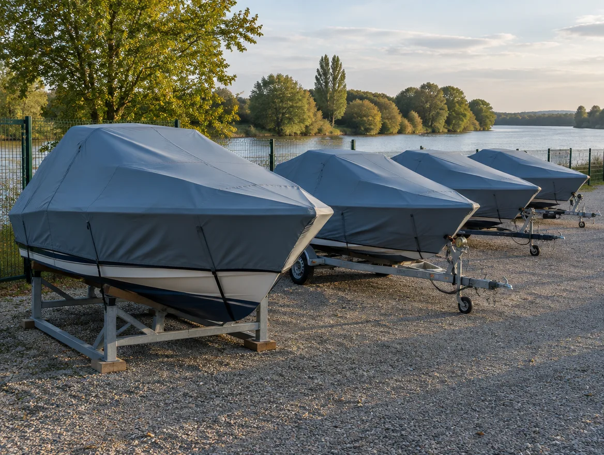
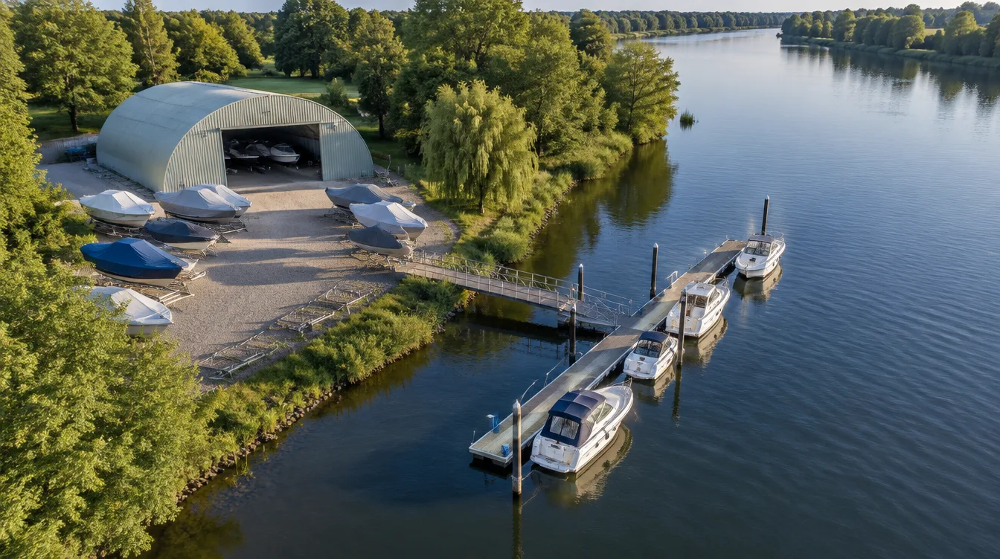

На воді
Пірс і понтон. Човен завжди готовий — приїхали, відв'язали, пішли.
Від
2500 ₴ / місяць
Критий сухий ангар і 40 місць надворі.
Від 2500 ₴ на місяць.
Просто зараз
Дані з нашого обліку, оновлюються самі. Місце закріплюється за вами після дзвінка.
Ціни
Приймаємо надувні човни, РІБи, моторні човни й катери. Гідроцикли та судна довші за 10 метрів — за домовленістю, зателефонуйте.
Порахувати
Ціна залежить тільки від довжини — місце на воді, на суші чи в ангарі коштує однаково.
Де стоятиме човен
Пірс і понтон. Човен завжди готовий — приїхали, відв'язали, пішли.

Під щільним брезентом, на кільблоці або причепі. Місце для причепа поруч.
Сухо цілий рік, без ультрафіолету. Лише 10 місць — бронюйте заздалегідь.
Приїхали й подивились.
Залишили човен.
Решту беремо на себе: допоможемо завести човен
і надійно його закріпити.

Як це влаштовано
Не треба нікому дзвонити, щоб дізнатись суму, і не треба переписувати реквізити з повідомлення.
Оплату позначає отриманою людина, звіривши з банком, — не програма. Місце теж закріплює людина, а не автомат.
Бронювання
Завантажуємо вільні місця…
Питання
Зателефонуйте — домовимось про час.